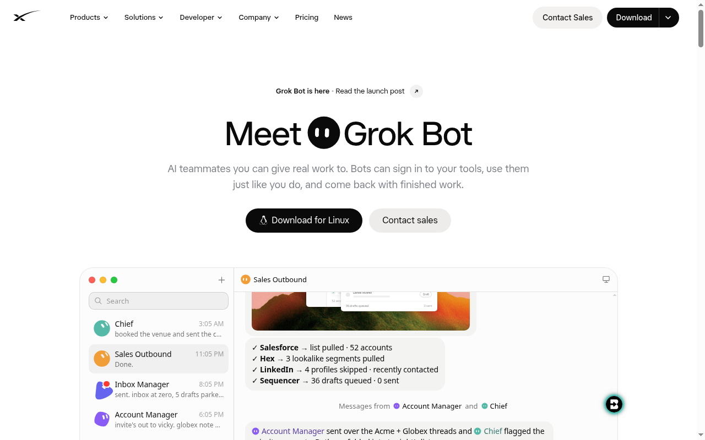
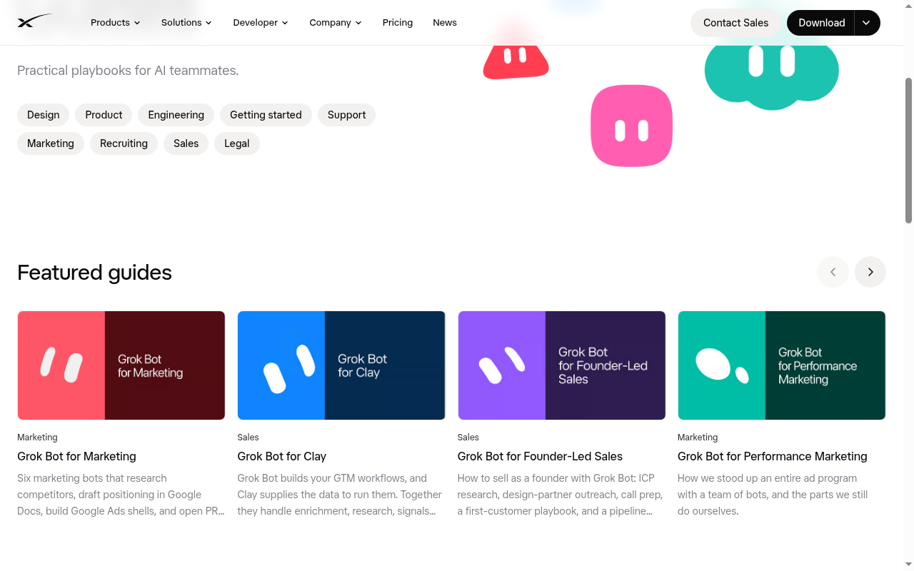
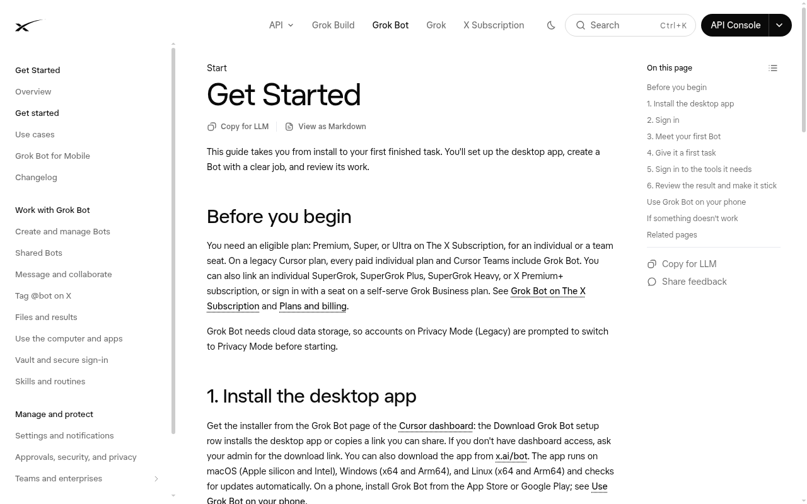
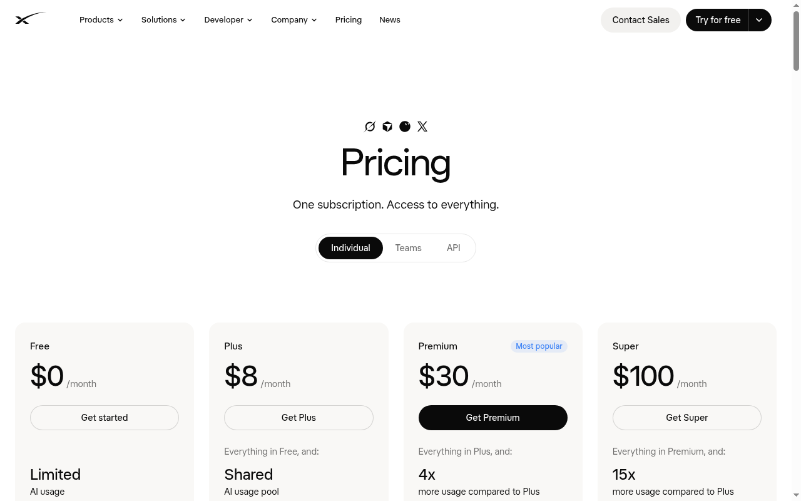
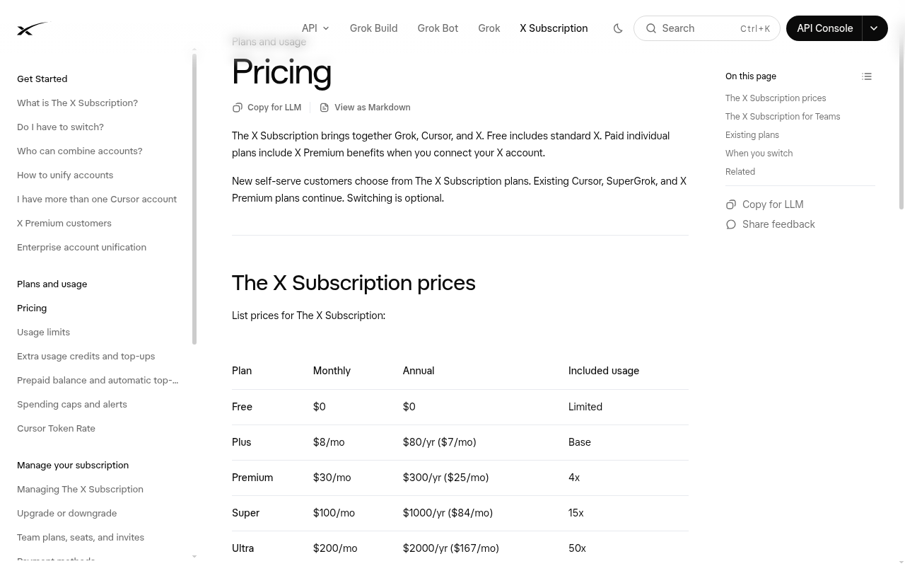

價錢與官方連結已查證（2026-10-31），其餘介面說明請以當日 App 為準。
Grok Bot 從零教學
由空白帳戶 → Primary Bot（主入口 bot）規則 → 專責小隊 → 路由卡
→ Connector（連接器）→ Skill（技能）→ 桌面 → 群組 → 電郵 → VM（雲端虛擬機）→ 本機權限 → 價錢
← → 鍵或下方按鈕翻頁 · 左側／☰ 跳章
對象：教師／同事／公眾（正式繁體中文）
澳門科學館 AI 學習資源 · 查證 2026-10-31 · 介面會改版
🗺️ 學習路徑（圖示總覽）
十二步走完；每步都有圖示與短說明。
澳門科學館 AI 學習資源 · 查證 2026-10-31 · 介面會改版
⬇️ 下載與官方入口

手機可於 App Store／Play 安裝；若已有可用方案，不要在手機內再買一次。
澳門科學館 AI 學習資源 · 查證 2026-10-31 · 介面會改版
⭐ Primary Bot（主入口 bot）：10 條規則（1–5）
Primary Bot＝日常入口／路由／閘／物證。每卡：做什麼 → 為什麼。
為何：避免雜訊與權限過大。
為何：減少打擾、時間一致。
為何：人把關，防誤寄。
為何：不信「已完成」自報。
為何：防洩漏進記憶與記錄。
澳門科學館 AI 學習資源 · 查證 2026-10-31 · 介面會改版
⭐ Primary Bot：10 條規則（6–10）
為何：勿把「分 bot」當保安邊界。
為何：雲端動作有閘。
為何：防未知定時亂跑。
為何：減少重疊與干擾。
為何：對齊官方最佳做法。
澳門科學館 AI 學習資源 · 查證 2026-10-31 · 介面會改版
📋 貼給主 bot 的自檢指令
自寫版本；貼上 Primary Bot（主入口 bot）即可。
請細讀這三篇官方指南後，檢查我現有的 Bot 設計（先報告，未經同意勿修改任何 Bot；用繁體書面中文）： https://x.ai/bot/guides/grok-bot-101 https://x.ai/bot/guides/grok-bot-for-work https://x.ai/bot/guides/how-i-run-multiple-teams-of-grok-bots 請輸出： 1) 各 Bot 名稱與一句職責 2) 職責重疊或不清之處 3) 權限過大處（例如可不經批准外發） 4) 建議合併／拆分／新增（每項附指南根據） 5) Routines（排程）是否預設停用、外發是否草稿優先

澳門科學館 AI 學習資源 · 查證 2026-10-31 · 介面會改版
👥 建立 bot 的規則與角色型
概念＋一句職責；匯入模板＝副本，不帶登入與對話。
澳門科學館 AI 學習資源 · 查證 2026-10-31 · 介面會改版
🗺️ 路由卡：任務 → 哪個 bot
主 bot 薄路由；人不用記「找誰」。先 keyword 夠用。
路由卡放哪裡／怎樣建？
- 建議保管者：Primary Bot（主入口／總管）負責維護與更新。
- 打開方式：跟主 bot 說「看路由卡／更新路由」；或開啟主 bot 指向的 Sheet／檔案連結。
- 新建流程：先定角色清單 → 寫清「何時找誰」→ 貼給主 bot 存檔。
| 虛構角色 | 關鍵詞例 | 職責一句 |
|---|---|---|
| 🔬 研究助手 | 查資料、來源、對照 | 蒐集與核對公開資料 |
| ✍️ 寫作助手 | 草稿、改寫、摘要 | 產出可審的文字稿 |
| ✅ 審核助手 | 檢查、清單、風險 | 對照規則挑問題 |
示例為虛構角色名；勿貼真實機構路由表／id。
澳門科學館 AI 學習資源 · 查證 2026-10-31 · 介面會改版
🔌 Connector（連接器）：可連的常見服務
把電郵、日曆、檔案、訊息等接到 bot，讓它代你讀寫（仍經授權與批准）。
| 圖示 | 名稱 | 用途一句 | 備註 |
|---|---|---|---|
| 📧 | Gmail | 讀信、草稿、摘要郵件 | 需用戶授權 Google 帳號 |
| 📅 | Google Calendar | 查空檔、建／改行程草稿 | 需用戶授權 |
| 📁 | Google Drive | 讀寫雲端檔案與資料夾 | 需用戶授權 |
| 📊 | Google Sheets | 表格讀寫、路由卡存放 | 需用戶授權 |
| 📑 | Google Slides | 產出或改簡報 | 需用戶授權 |
| 💬 | Slack | 草稿訊息、讀頻道摘要 | 需工作區授權 |
| 🎨 | Canva | 設計卡／海報操作 | 需 Canva 帳號授權 |
| 📝 | Notion | 頁面／資料庫整理（若目錄有） | 需帳號授權；以 App 目錄為準 |
| 𝕏 | X（Twitter） | 發帖草稿、公開搜尋 | 發帖需連帳戶；公開搜尋可不連 |
| 🐙 | GitHub | 程式碼、PR、Issues | 需 GitHub 授權 |
| 📬 | Outlook／其他 | 企業郵件等（視目錄） | 需對應帳號；以當日目錄為準 |
路徑概念：側欄 → Connect apps／Settings 相關項目。下一頁起介紹 Skill（技能）如何安裝與使用。
澳門科學館 AI 學習資源 · 查證 2026-10-31 · 介面會改版
🧩 Skill（技能）vs Routine（排程／例行工作）
先弄清「怎麼做」與「何時跑」；建議順序：做成功一次 → 存成 Skill → 再自動化成 Routine。
🧩 Skill（技能）
- 可重用的「怎麼做」說明
- 含步驟、決策規則、預期輸出、安全邊界
- 帳戶內各 Bot 可共用；某 Bot 可能需對應 app／登入才用得上
⏰ Routine（排程／例行工作）
- 指定某個 Bot「何時跑」
- 排程（例如工作日早上）或事件觸發（Slack／電郵／webhook 等）
- 雲端執行；筆電可關機
| 對照 | Skill（技能） | Routine（排程／例行工作） |
|---|---|---|
| 本質 | 方法／說明書 | 觸發器＋何時執行 |
| 問題 | 「要怎麼做這件事？」 | 「何時／因何事跑這流程？」 |
| 建議順序 | 先做一次成功 → 存成 Skill → 再自動化成 Routine | |
官方原文概念：A skill is a reusable set of instructions；a routine tells one Bot when to run。
澳門科學館 AI 學習資源 · Skill 查證 2026-11-01 · 介面會改版
📥 安裝／啟用與使用 Skill（技能）
四種常見取得方式＋怎麼呼叫；團隊 Publish 僅簡述。查證 2026-11-01。
@ 呼叫 Bot、群組、Routine、apps。勿捏造未寫明的快捷鍵／斜線指令。請把我們剛才完成的流程存成 skill，名稱為「每週帳戶健康檢查」。請寫明：何時使用、需要哪些來源系統與權限、步驟順序、如何驗收結果、應回傳什麼格式、以及哪些動作必須先經我批准（例如聯絡客戶）。
來源：docs.x.ai · Skills and routines · 查證 2026-11-01 · 介面會改版
澳門科學館 AI 學習資源 · Skill 查證 2026-11-01 · 介面會改版
💻 電腦版功能巡禮（總覽）
側邊欄是指揮台。以下為示意＋佔位；真 UI 截圖待補。
詳見 Settings · Computer & apps
澳門科學館 AI 學習資源 · 查證 2026-10-31 · 介面會改版
🎛️ Take over · 語音 · Hidden · Sections
澳門科學館 AI 學習資源 · 查證 2026-10-31 · 介面會改版
📤 分享 bot 與 Public template（公開模板）
把你調好的 bot 做成他人可一鍵安裝的副本；與「自己匯入別人模板」剛好相反。
- 路徑概念：bot 設定／選單 → Share → Create a copy → Publish 為 Public template（公開模板）。
- 分享前請清除 secrets、真實電郵、內網位址與私人 Vault 引用。
- 匯入者得到的是規則與設定副本，不會帶走你的登入 session 與對話紀錄。
📤 分享／公開模板
你是作者：把 bot 發佈成 Public template，別人用連結一鍵安裝。
適合：培訓教材、起步 CoS、標準小隊。
📥 匯入模板
你是使用者：打開別人已公開的模板連結，一鍵安裝到自己帳戶。
適合：快速起步、對齊機構標準主 bot。
澳門科學館 AI 學習資源 · 查證 2026-10-31 · 介面會改版
💬 Bot 群組
澳門科學館 AI 學習資源 · 查證 2026-10-31 · 介面會改版
✉️ Grok mail
| 用途 | 短做法 |
|---|---|
| 🛒 代登記服務 | 用 bot 址註冊；驗證由 bot 讀（會問你） |
| ↪️ 轉寄即報告 | 長信轉寄 → 摘要重點 |
| 🧾 集中收據 | 網購收據定期表 |
| 🗣️ 聯絡商戶 | 查價／跟進（多為草稿） |
| 📅 約時間 | 來回郵件找空檔 |
| 📰 電子報摘要 | +news 標籤＋週例行 |
澳門科學館 AI 學習資源 · 查證 2026-10-31 · 介面會改版
☁️ VM（雲端虛擬機）：全部 bot 共用一部
各 bot 有自己螢幕；檔案／登入共用。持久檔放 /workspace。
🖥️ Your computer（本機）
- Execution：Ask／Always／Never
- Route traffic（路由流量）：流量經本機 → 對方見本機 IP
- 適合：內網、要你地區 IP 的站
☁️ Bot's computer（雲端）
- Update／Reset／Recover
- 常見為資料中心 IP（如美國等地）
- 適合：需該區 IP 的服務情境
Settings → Computer · Computer & apps
澳門科學館 AI 學習資源 · 查證 2026-10-31 · 介面會改版
🧰 可在 VM 使用的工具（概念）
澳門科學館 AI 學習資源 · 查證 2026-10-31 · 介面會改版
📡 即時通訊穩定性（如實）
極不穩
VM 上登入／掃碼／session 極易斷。建議盡量不靠，或改本機專責策略。
稍不穩
偶發斷線／要重連 QR。固定轉發要有重連檢查。
澳門科學館 AI 學習資源 · 查證 2026-10-31 · 介面會改版
🔐 本機控制權限 vs Auto-review（自動審核）
🖥️ 本機 Execution
可跑指令、讀寫本機檔、檔案來回（類 CopyToBox／FromBox）。
澳門科學館 AI 學習資源 · 查證 2026-10-31 · 介面會改版
🏢 連機構內聯網（概念）
雲端機預設公網。到內網通常靠下列之一：
Route traffic
http://內部主機/路徑/… — 勿把真實 IP／端口寫進公開教學或 bot 規則。澳門科學館 AI 學習資源 · 查證 2026-10-31 · 介面會改版
⭐ Primary Bot 與近期能力（精簡）
功能隨版本推出；見 changelog。
澳門科學館 AI 學習資源 · 查證 2026-10-31 · 介面會改版
🔐 Vault（密碼庫）與安全習慣
澳門科學館 AI 學習資源 · 查證 2026-10-31 · 介面會改版
🔧 故障次序（先溫和）
Reset 破壞性較高；先備份／workspace 重要檔。電腦重建可能清已裝套件。
- Free／Plus 能用 Bot？ 不能；最少 Premium。
- 手機再買？ 已有方案不要在商店再買。
- 為何看不到新功能？ 先更新 app；對照 changelog。
- 外發會直接寄？ 例行多草稿；對話寄信看批准／Auto-review。
澳門科學館 AI 學習資源 · 查證 2026-10-31 · 介面會改版
✅ 下一步練習（清單）

澳門科學館 AI 學習資源 · 查證 2026-10-31 · 介面會改版
💳 The X Subscription（個人）
查證 2026-10-31 · 美元未連稅 · 以結帳頁為準
| 方案 | 月費 | 年費 | Grok Bot | 用量相對 Plus |
|---|---|---|---|---|
| Free | $0 | — | 不包括 | Limited |
| Plus | $8 | $80 | 不包括 | Base |
| ⭐ Premium | $30 | $300 | 包括 | 4× |
| Super | $100 | $1000 | 包括 | 15× |
| Ultra | $200 | $2000 | 包括 | 50× |


澳門科學館 AI 學習資源 · 查證 2026-10-31 · 介面會改版
📝 小測驗（5 題）
1. 哪個個人方案起包括 Grok Bot？
2. 例行工作產生的外發電郵，通常應？
3. 無本機檔案需求時，本機 Execution 建議？
4. 全部 bot 的雲端電腦關係是？
5. Skill（技能）是什麼？若 Private skill 找不到，正確做法較接近？
澳門科學館 AI 學習資源 · 查證 2026-10-31 · 介面會改版
學完了
記住：主 bot 薄路由 · 外發草稿 · Status≠evidence · 密碼進 Vault
本機無需求就 Never · 介面會改版，以官方為準
澳門科學館 AI 學習資源 · 查證 2026-10-31 · 介面會改版
本頁為自製教學，排版與內容非 grokbot.hked.ai 複製。